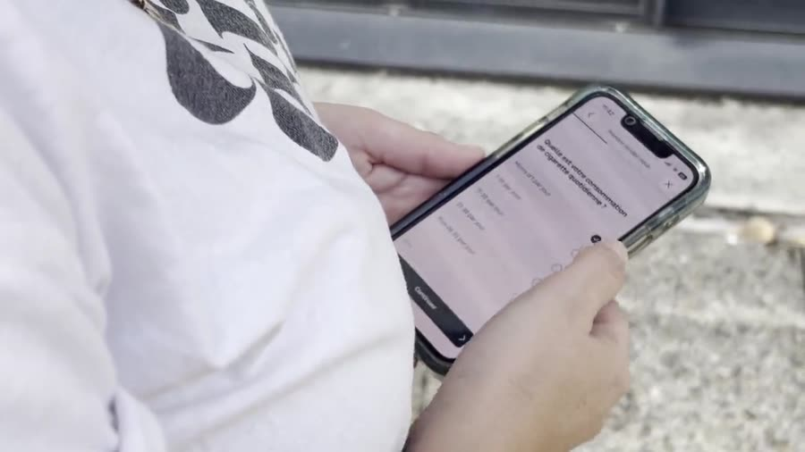
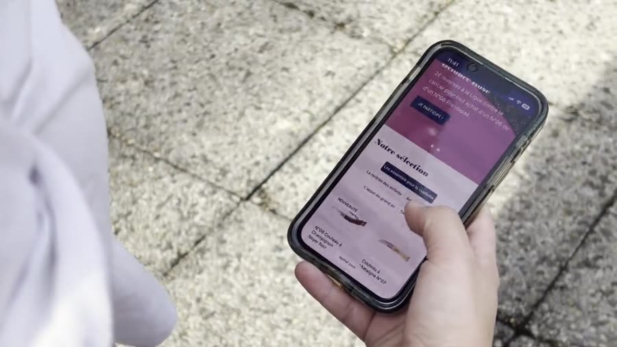
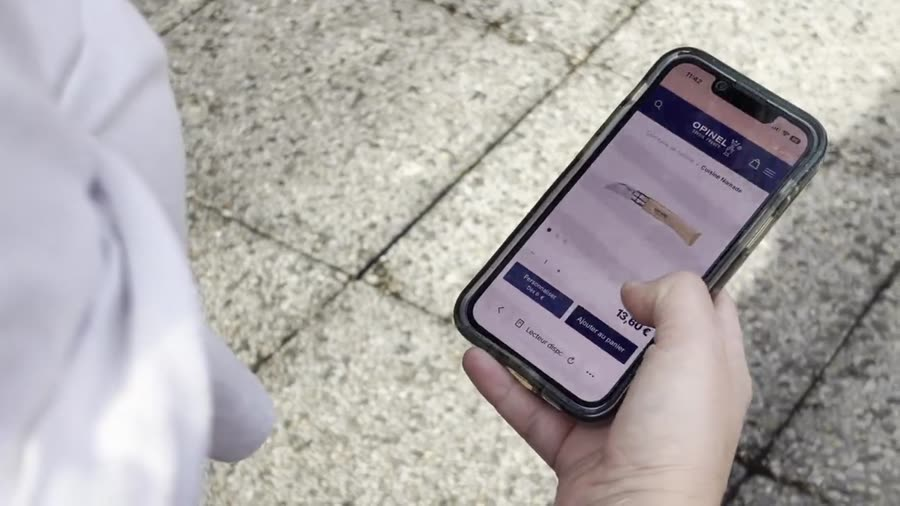
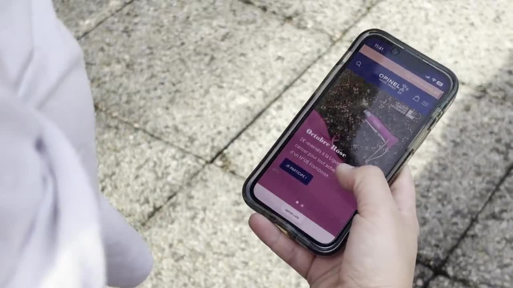

Nos clients, de belles histoires


Une offre sur-mesure, durable et performante.
De la conception à la mise en œuvre, La Bonne Agence vous accompagne à chaque étape de vos projets digitaux.
Grâce à une expertise complète et une approche collaborative, nous concevons des solutions utiles, élégantes, responsables — et surtout, alignées avec vos enjeux réels.
Développez un site ou un outil métier sur mesure, sobre et performant.
En savoir plusFaites la différence avec une expérience e‑commerce pensée pour vos clients.
En savoir plusTestez, améliorez, itérez grâce à nos audits techniques et UX.
En savoir plus
Applications métierDes outils sur mesure qui simplifient le quotidien des équipes, conçus avec celles et ceux qui les utilisent.
Lire la suite


Sites web & e‑commerceDes sites et des boutiques rapides, accessibles et faciles à faire vivre, pensés pour durer.
Lire la suite


IA & automatisationDes usages de l'IA utiles et maîtrisés, intégrés à vos outils pour faire gagner du temps.
Lire la suite